O problema da representação
Mapas oficiais podem omitir usos tradicionais da terra e da água. Barreiras técnicas também limitam a participação na produção cartográfica.
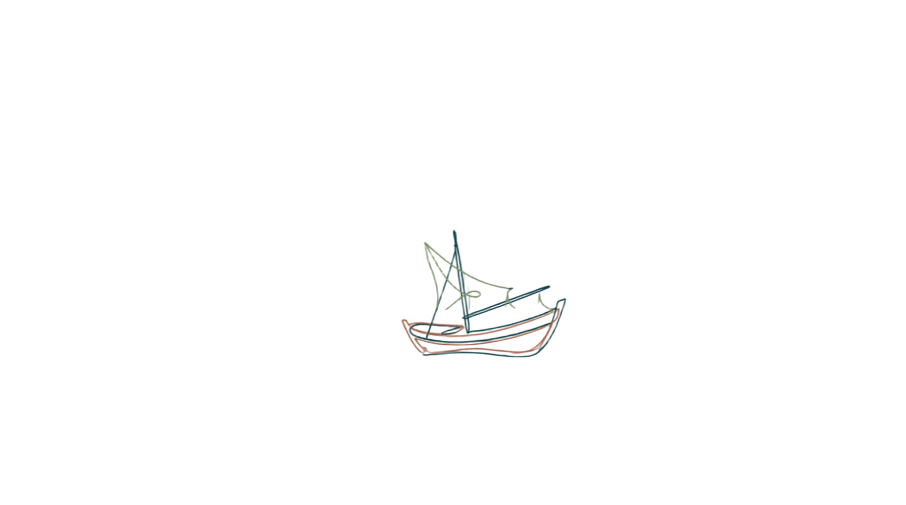
Autor Carlos Eduardo Ueno
Orientador(a) Prof. Dr. Cristiano Quaresma de Paula
Programa de Pós-Graduação em Geografia (PPGGeo)
Universidade Federal do Rio Grande — FURG · Rio Grande
CAPES
Quem produz o mapa participa da definição do que se torna visível no território.
A cartografia social permite que comunidades pesqueiras representem seus espaços de vida a partir de seus próprios conhecimentos e necessidades.
Mapas oficiais podem omitir usos tradicionais da terra e da água. Barreiras técnicas também limitam a participação na produção cartográfica.
Um WebSIG para produzir e atualizar mapas participativos, aproximando saberes locais e ferramentas geográficas.
O mapeamento comunitário contribui para a construção do Protocolo de Consulta e para a defesa territorial.
Acselrad (2013); Albuquerque (2025).
Sistemas de Informação Geográfica integram localização e atributos para analisar e visualizar dados espaciais.
Ferramentas especializadas podem dificultar o uso sem formação técnica.
Os WebSIG oferecem funções geográficas pela internet, em computadores, tablets e celulares.
Interfaces simples ampliam o acesso, mas ainda dependem de conexão à internet.
No REAT CARTO: as comunidades registram territorialidades e atualizam dados para gerar mapas em PDF ou PNG.
Andrade et al. (2013); Bravo e Sluter (2018); Gallis et al. (2018); Albuquerque (2025).
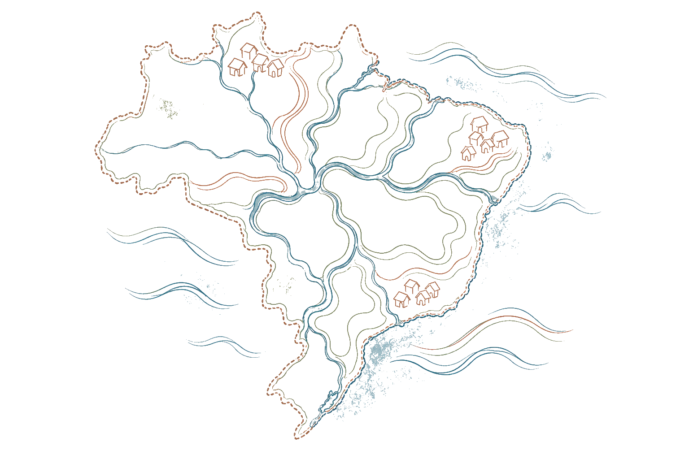
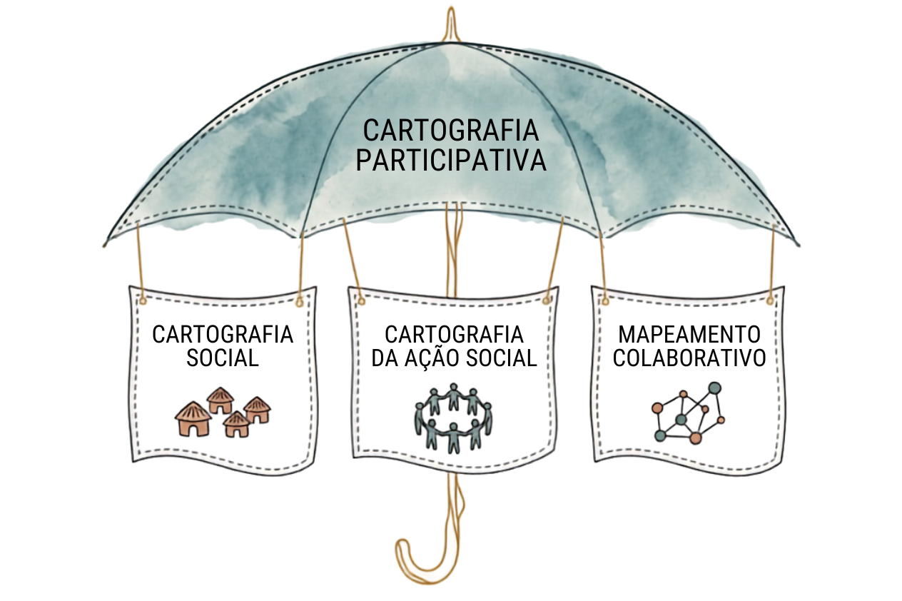
A Cartografia Participativa funciona como categoria principal; dela derivam a Cartografia Social, a Cartografia da Ação Social e o Mapeamento Colaborativo.
- A partir da década de 1990, a cartografia passa a ser vista como prática social — instrumento de representação de territórios comunitários tradicionais
- Povos indígenas, quilombolas e comunidades tradicionais se apropriam da técnica para dialogar e pressionar o Estado
- Diversas terminologias quase sinônimas surgem: mapeamento etnoambiental, comunitário participativo, cultural, etnozoneamento, cartografia social...
WebSIGs surgem para simplificar o acesso a dados georreferenciados via internet — resposta às limitações dos SIG's comerciais, restritos a especialistas.
Antes do REAT CARTO, dois sistemas foram desenvolvidos: mapeamento de conflitos (relatórios CPP 2016/2021) e banco de dissertações/teses sobre pesca artesanal.
Criado pelo Núcleo de Ensino, Pesquisa e Extensão (R)Existências Ambientais e Territoriais, em projeto de iniciação científica tecnológica.
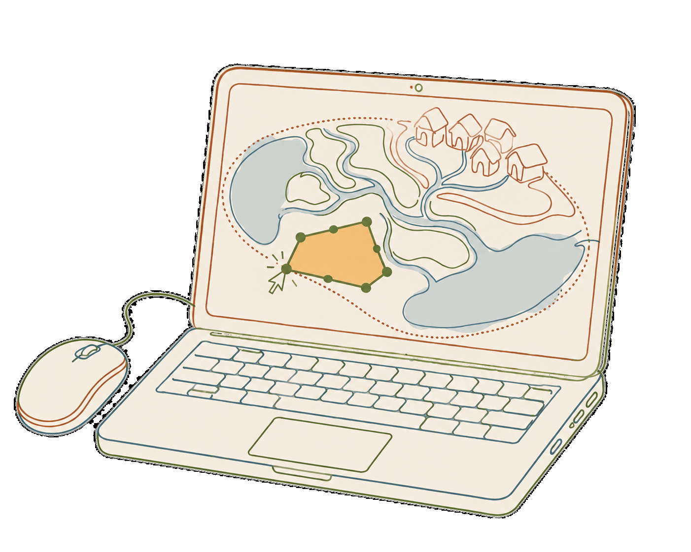
Interface intuitiva, acessível a pessoas sem formação em SIG
As comunidades identificam, documentam e representam territorialidades conforme suas próprias necessidades.o
Mapas vivos: territórios não são estáticos — dados podem ser editados continuamente pela comunidade.
Critérios cartográficos e mapas em PDF ou PNG apoiam a apresentação das reivindicações comunitárias
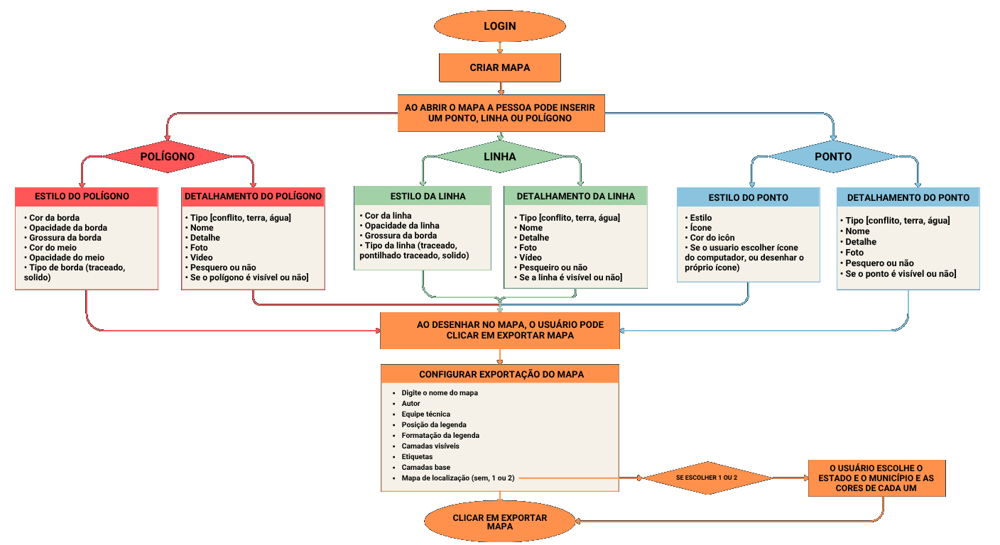
Fonte: autoral (2026)
locais de moradia e vivência comunitária — centros de decisão e poder simétrico.
os fluxos — caminhos fluviais, varadouros e trilhas que conectam as moradias às áreas de recurso.
As malhas acolhem elementos que revelam a organização territorial.
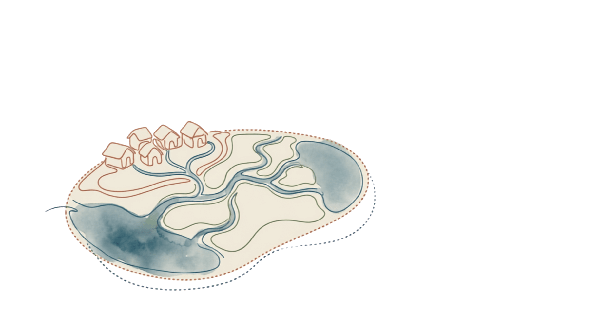
O estabelecimento de uma ordem espacial, controle e identidade.
O estabelecimento de uma ordem espacial, controle e identidade.
A reconstrução imediata de novas mediações espaciais e novas relações de poder em novas bases.
Mais de 7.000 profissionais em 73 comunidades, ao longo de 18 municípios, reconhecem a Lagoa dos Patos como território pesqueiro indissociável de sua existência.
O REAT CARTO atuou como plataforma central de consolidação dos dados geográficos, gerando mapas que cumprem os padrões exigidos pelo Ministério Público — convertendo cartografia social em instrumento legal.
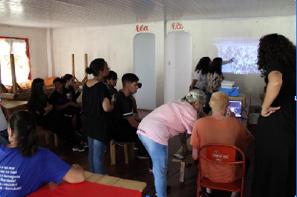
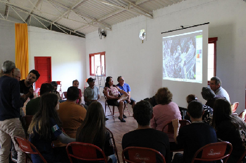
Diferentes gerações mapearam juntas os territórios de terra e de água.
O projeto de extensão reuniu pescadores, pescadoras e estudantes para usar as primeiras versões do REAT CARTO.
Alunos do 9º ano da EMEF Sylvia Centeno Xavier participaram com professoras e a diretora, que solicitou acesso para atividades pedagógicas.
O sistema já funcionava, mas ainda apresentava limitações técnicas. A instabilidade da internet também dificultou o uso na oficina.
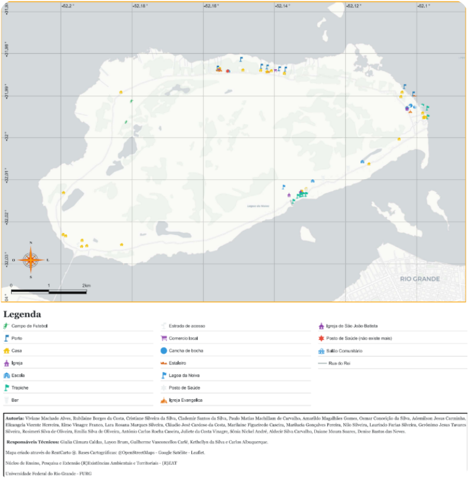
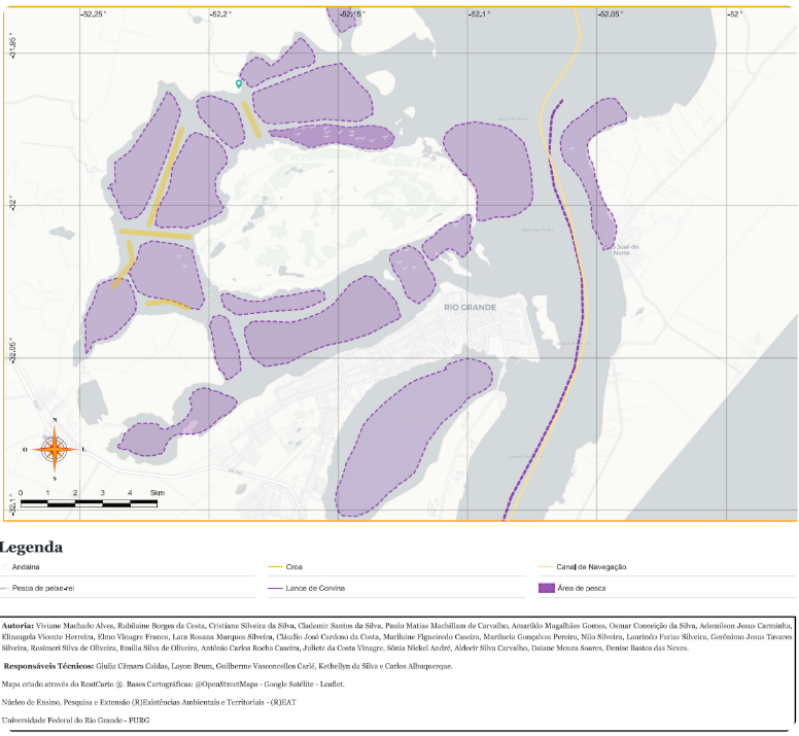
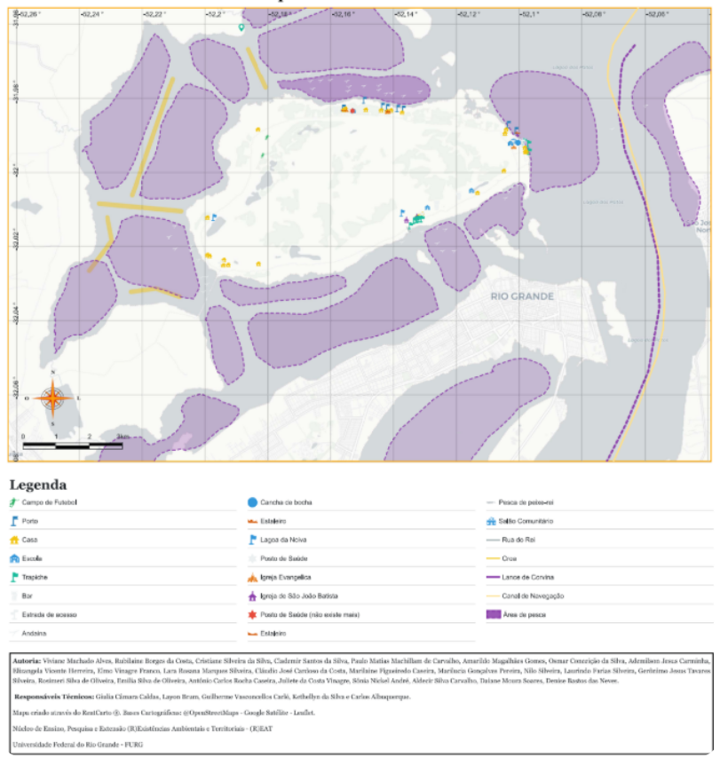
Legenda da Figura 5
“Território água e terra da comunidade pesqueira da Ilha dos Marinheiros.”
O parágrafo anterior do documento atribui à oficina o Mapa 3 da Ilha da Torotama. Como a relação entre esse parágrafo e a Figura 5 não fica clara, vale conferir a autoria e a localidade antes de apresentar o mapa como resultado daquela oficina.
Territórios de luta e cartografia social